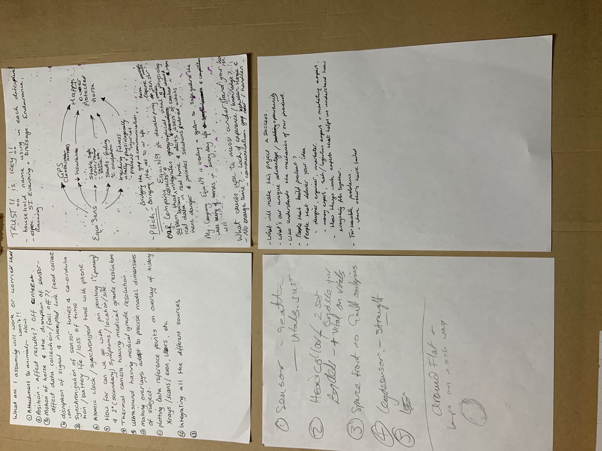
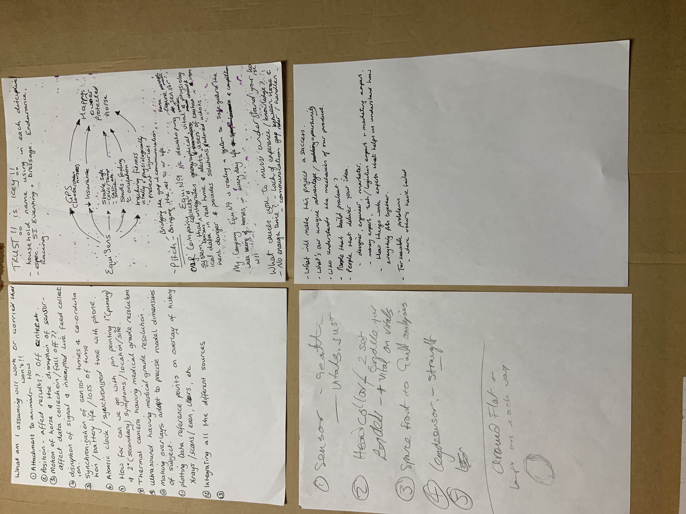

N9
The problem
A show jump scientist had the idea of creating Fitbit for horses, she had an investor but he had doubts about investing, so I was approached to help with research and design, after an interview with both of them I decided a design sprint was the best solution to their problem. This will help compress months of research into a single week, and at the end of the week they would have clearly understood the project, gotten their business questions answered, and a prototype, and would have tested the idea with the customers and decided on how to move forward with the project.
Planning & Strategy
I planned a one-week design sprint session. We ran the sprint out in the countryside near the showjumpers barn to enable us to have access to everything we need for the workshop.
Pre-sprint
Before we met for the design sprint, I chose the activities required for the design sprint, as we are a team of 3, the founder has not yet created a business plan, and the requirement is primarily for discovery, I removed activities that were not for the project. I informed them of how the sprint will take place, the roles we will all take, and what to expect, I also sent a form to the stakeholders to encourage them to gather some research materials. These includes: 5 users that will help us with testing out our product. A list of at least 3 competitors I also conducted, and encouraged them to conduct at least three interviews, I sent them a guide on questions they need to ask.
DAY 1: Gathering existing knowledge
When we met for the sprint, I organised the workshop environment and kept all materials we will need in a neat and easily accessible area.
After everyone was settled in, we started day one with the pitch, I helped the stakeholders organise their thoughts by discussing the project, and everyone talked about what they know so far, after about twenty minutes of discussion, I prepared our minds for the workshop and we started by practising the “Elevator pitch” for the product, everyone wrote their pitch and, we pitched to each other, and refined our pitch until it was perfect for the day, I encouraged the stakeholders to recite the pitch at every opportunity they had, I also told them we will start each day with the pitch in the next remaining four days of the project to help memorise it.
Long and short term goals
We discussed the long- and short-term goal for the project; I helped the stakeholders get their thoughts together by asking key questions to get them thinking about every possibility, their plans and how they can work together to achieve them. I then encouraged writing long-term and short-term goals for the project, we compared notes, agreed on the best goals and merged them into one note to be used for the rest of the project. This will also help the stakeholders when they are developing their business plans and other project-related work.
Problem statement
We discussed the problem, and made lists of every problem we could think of with the horse, its rider and the environment, we talked about problems faced when transporting the horse; we covered every scenario we could think of, then I asked us to crunch it down to the primary problem we are solving for, and also look at how the solution solved the problem, we got to a consensus on the key problems to list and problems to explore afterwards.
 

Backburner Board
We discussed ideas around the solution, how the product will be produced, where, when, who will produce it, and how it will look, we analysed what our competitors have and how it works; we talked about the horse’s sensitivity to any attachments and how we could work around it. I guided them on writing ideas they love on a sticky note and adding them to our Back Burner Board.
Open card sorting
I created a product exercise board, and we used stickies to categorise and prioritise the key ideas into four sections, who, what, when, and where, to look at the user flow of the product. This helped us talk about our assumptions of the product and I made a list of key assumptions to work on later, we also focused on our users a bit more, we began to see that our problem and solution were vast and I took us back to the problem statement and using this we re-evaluated our users and their problems and shrunk the list down to five key problems.
Needs Wants and desires
Throughout this process, I guided the stakeholders on defining the business, how the product solves the problem for the users by discussing their needs, wants and desires. We discussed situations or motivations that trigger the need for the product, I then prompted for us to ask the “five whys and a how question” by following the activity template, which helps us have a structured and recorded answer to our questions.
Who What when and Where?
We talked about things we are not familiar with, and shared knowledge to fill the gap of knowledge we lack about the project. We covered existing research we gathered before the sprint, and analysed competitor products, I then led the workshop on the “who, what, where, and when” template, during the workshop we were able to figure out customer use cases, a few challenges we face were the fact that animals will not tolerate an attachment, they will try to get rid of it and might harm themselves while doing so, so figuring out how we can attach the gadget without discomfort was paramount, this led to us reaching out to a few of the founder’s Equine community of other show jump scientists, the conclusion was either a product that is light enough to be plaited in the horse’s mane or it has to be used only when riding the horse as part of the saddle, we also looked at the possibility of creating a horseshoe technology but the viability was arguable.
Critical path
In this session we took turns talking about the day in a users life and problems they faced, we took turns in explaining our viewpoint and writing them down on paper as a step-by-step flow.
Notes
This was my first design sprint, I was nervous at the beginning, and I stammered, made mistakes, and got confused sometimes when my notes got disorganised.
Lesson Learnt
I will got for more UX workshops to help me organise my thoughts, gain confidence and become an expert at sprint, and I will create a guiding list that I will mark as I progress to reduce being disorganised, or confused.

DAY 2: Checking all possible scenarios
On the second day, I reviewed our schedule for the day, we all practiced our elevator pitch turn by turn, and the day’s work began.
Mind mapping
We went through yesterday’s key ideas, problems and solutions, and started today’s activity with mind mapping, I instructed the stakeholders on what to do and used a timer, we all explored all problem and solution possibilities on paper using the mind mapping methodology, everyone exchanged notes, and we asked each other questions about our notes, probing for clarity on why a solution was written, what the technology will look like, features of the technology and how feasible it is, I encourage questions that led to a long discussion, and even arguments, at the end of the day we clearly understood each other’s notes, improved disapproved or loved some sections of each others notes.
Team building activities
To me it is important to get to know people you work with or will work with well, see their serious, childish, angry, happy moods, to understand them deeply, anbd connect with them. Team building exercises helps in different parts of a business, but most importanttly it bonds the team together, and makes every single part of the project easy becasue it brings out people potential and creates a 100% positive energy. It also helps new founders decide on if they will be able to go through a business journey with an individual.
I always make sure there are two key activities, music and scientifically proven congitive acitivity that is fun and engaging.
Crazy 8s
We expanded our ideas creatively using the crazy 8 workshops, I set up a timer on my iPad using the Bit timer app, and we generated sketches at a 5 minutes sprint, we sketched up to five different ideas within 15 minutes. We reviewed each other’s sketches, had a question-and-answer session and discussed our ideas behind each sketch, we then sent each sketch around and market the ones we liked the most, that is feasible and had more chance to be produced and work for the customer.
Storyboard
In the next task, I guided the stakeholders in the art of storyboarding, I advised them on referring to the mind mapping and crazy 8s for inspiration, and we began work, after everyone was done with their storyboard, we exchanged notes and had a discussion on the problems each storyboard solved and the difference in our approach, and what prompted the solutions we came up with, how the proposed technology will work on the horse, how we will avoid discomforting the horse. We each had unique insights, and so this led to a long discussion beyond our time limit, I advised we go to the next activity as it will help us reach a consensus.

Silent critic
I gave everyone a piece of paper to write down their views on the other person's storyboard within five minutes, and pass it on to that person, then the person can go through it and prepare their argument against tor for the notes. doing this we were able to quietly share our though on each other’s work, we focused on the feasibility and viability of each idea and got a better idea of everyone’s views on their solution and why it matters.
Group critique
Using the group critique workshop, we discussed what we had in mind about each other’s work during the silent critique, we made suggestions and helped each other improve on our ideas, we then focused on a solution we believe is actionable, feasible and viable. I re-sketched the single idea and we used stickies to add re-evaluate features and add them to it.
Notes:
During this phase my confidence built up, we were more comfortable with each other, and we worked better as our minds are in sync on the problem we were solving.
Lessons learnt:
I should have set up an audio or video device to document the whole process, this is because I kept forgetting to record our process aat crucial times and lost some of those times.
I should learn to listen more and practice a calm and more corporate approach to discussion with the stakeholders, watching some of the small video recordings I realised I was too comfortable and did not watch my words, I was argumentative sometimes and impatient.
DAY 3: Choosing the right path
We started out the day with elevator pitch practice, everyone pitched for five minutes. We then moved on to our goal of the day, which is to take all the possibilities in our previous workshop and shrink our ideas into a single solution, we then ended up with a single idea each.
Re-evaluating conflict
We looked at our storyboard ideas, and re-evaluated our conflicting ideas, analysed and discussed them, at this stage i tried to deter people from geting attached to an idea too much by making sure we are looking at the reality of implementation and all other technical possibilities.
Planning to test assumptions
We gathered all the other assumptions in the previous activities and reviewed them all, discussed how we would test the assumptions, this led to talking about going to the barn or buying a decent-sized horse doll. We ended up printing out a picture of a horse and used it to demonstrate and test out all of our past assumptions, and then we planned to use the same process to test with our target audience for the end product.
Reviewing the backburner board
We reviewed our backburner ideas, finally got rid of the ones we could not use at all, and re-evaluated the ones we chose intending to end up choosing one idea from three ideas we had. This proved to be challenging because at the end of the day the stakeholders loved two of the ideas, one was for monitoring race horses, and the other for monitoring the horse 24 hours, so I asked us to choose the one that solved the biggest problem, can be implemented easily, and produced in a short period. We agreed on working with the horse race monitoring system.
Second storyboard
I then initiated another storyboard session focusing on monitoring race horse system that the hours can wear without discomfort. We discussed while I sketched on paper. At the end of the day, we reached a conclusion the product and called it a day.
DAY 4: Prototype
Today we had a five minutes practice elevator pitch. And I started the day by sharing sharpies, scissors and paper for our workshop, we all had five minutes to develop our idea with a paper prototype around the racehorse monitoring system. When we finished our prototype, we took turns explaining our idea, how to implement it, and where to produce it. After a long debate on deciding which idea to stick with, we ended up agreeing based on technological and equine requirements. I designed a low-fidelity application to go with the hardware
DAY 5. Testing the end product
We discussed the use case for the prototype and reached out to our Facebook group for testing. Testing took place as a video call, where we demonstrated the hardware and software and asked for user feedback.
The final product is a gadget that monitors a race horses gait, using AI, it records the racehorse’s pattern of behaviour over time, it learns its walking patterns, gait, It also detects body, temperature and uses that data to know if the horse is fit for racing or not during racing events. The device is also equipped with a GPS to locate the horse.
The technology uses gyroscope technology to monitor movement, head sensors for body temperature and ECG sensors to monitor the heartbeat.
The stakeholders agreed that they have enough data to validate their idea, and they planned on going to develop their business plan and starting the project.
Deliverables
Sprint Documentation Copies Every UX project starts with a strategy, I develop a UX strategy based on data and requirements the company provides.
UX Expert Feedback I sent an analysis and feedback on my thoughts and suggestions on the project.
Request For Permission I sent a request for permission to use assets and media on my portfolio.
Thanks
That's all for now, Please add me on LinkedIn, leave feedback in the gold-coloured chat app or simply tap on the like or dislike button, if you do not have the time for feedback.
Feedback is important to me, please 😅.